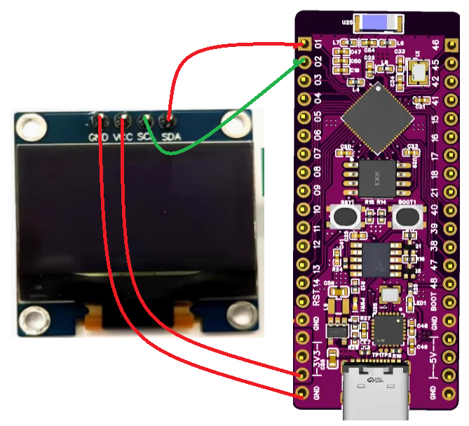
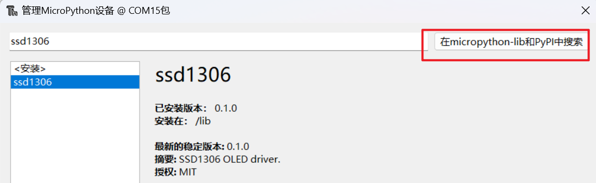
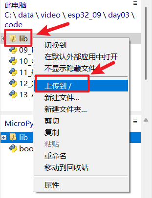
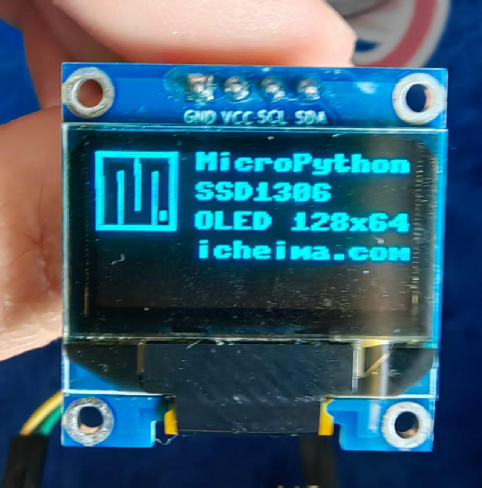

<!DOCTYPE lake>
<p data-lake-id="u53942d32" id="u53942d32"><span data-lake-id="u5eb6d29f" id="u5eb6d29f">想象一条街上有很多房子，每个房子里面住着不同的家庭。这些家庭需要接收信件，比如水电账单或快递包裹。但邮递员不能一次把信件送到所有的房子里，他需要一个一个地按顺序送到每个房子。这条街就是IIC通信的**总线**，而每个房子就是不同的电子元件。</span></p><p data-lake-id="ud378f569" id="ud378f569"><span data-lake-id="u8e4ef6c3" id="u8e4ef6c3">​</span><br/></p><ol list="u000254bd"><li data-lake-id="u309c37b0" fid="u85c439e6" id="u309c37b0"><strong><span data-lake-id="u2136a482" id="u2136a482">IIC怎么工作？</span></strong></li></ol><p data-lake-id="u571c62b4" id="u571c62b4"><span data-lake-id="u252bbd02" id="u252bbd02">IIC通信就像是邮递员送信到这些房子：</span></p><p data-lake-id="ud435a6c0" id="ud435a6c0"><span data-lake-id="ucc0b49ea" id="ucc0b49ea">每个房子（电子元件）都有自己的地址，邮递员（控制器）通过街道（IIC的两根线）来给每个房子送信。<br/></span><span data-lake-id="u7292aa80" id="u7292aa80">邮递员会先看看信上的地址，确定应该送到哪一家（这就像IIC中的“寻址”）。然后他把信送到那个房子。<br/></span><span data-lake-id="u8dc787c7" id="u8dc787c7">每次，邮递员只能给一个房子送信。其他房子虽然也在这条街上，但他们要等到邮递员送完这一家后再轮到自己。</span></p><p data-lake-id="u16802d2c" id="u16802d2c"><span data-lake-id="u434dcb17" id="u434dcb17"><br/></span><strong><span data-lake-id="ub9a6bcb3" id="ub9a6bcb3">2. 街道上的两根“线”</span></strong><span data-lake-id="u28fcdc3c" id="u28fcdc3c"><br/></span><span data-lake-id="u8d35ac0a" id="u8d35ac0a">在IIC这条“街道”上，有两根非常重要的“线”：</span></p><p data-lake-id="ud19d8253" id="ud19d8253"><span data-lake-id="u87992ab8" id="u87992ab8">SDA线：就像是邮递员手里拿着信件的信息线，信件的内容（信息）会通过这根线传到房子里。<br/></span><span data-lake-id="u338f2a66" id="u338f2a66">SCL线：这是帮助邮递员按时送信的“时钟线”，就像街上的路灯，照亮邮递员什么时候该送信。</span></p><p data-lake-id="u40e654f3" id="u40e654f3"><span data-lake-id="u2e8af860" id="u2e8af860">​</span><br/></p><p data-lake-id="u5053df9e" id="u5053df9e"><span data-lake-id="u0ec23857" id="u0ec23857">下面看一下在micropython中如何使用i2c</span></p><ol list="u0b3a8612"><li data-lake-id="u908cea26" fid="u8d2f5e8d" id="u908cea26"><span data-lake-id="u3a4b7f1b" id="u3a4b7f1b">导包</span></li></ol><span class="yuque-card-unsupported">[codeblock]</span><ol list="u0b3a8612" start="2"><li data-lake-id="u00f12c1f" fid="u8d2f5e8d" id="u00f12c1f"><span data-lake-id="u77ffbe4c" id="u77ffbe4c">初始化引脚</span></li></ol><span class="yuque-card-unsupported">[codeblock]</span><ol list="u0b3a8612" start="3"><li data-lake-id="u27052bfd" fid="u8d2f5e8d" id="u27052bfd"><span data-lake-id="ueeeb1e61" id="ueeeb1e61">调用scan()函数，搜索设备</span></li></ol><span class="yuque-card-unsupported">[codeblock]</span><p data-lake-id="ua4e719aa" id="ua4e719aa"><span data-lake-id="u336774f2" id="u336774f2">​</span><br/></p><p data-lake-id="u7b0e1879" id="u7b0e1879"><span data-lake-id="u7da8a95f" id="u7da8a95f">参考文档：</span><a class="yuque-card-link" href="https://docs.micropython.org/en/latest/esp32/quickref.html#hardware-i2c-bus" rel="noopener noreferrer" target="_blank">bookmarkInline：bookmarkInline</a></p><h2 data-lake-id="YsPq9" id="YsPq9"><span data-lake-id="uc4bffca8" id="uc4bffca8">点亮IIC屏幕 </span></h2><h3 data-lake-id="glQip" data-lake-index-type="2" id="glQip"><span data-lake-id="ub81976b4" id="ub81976b4">按照如图接线</span></h3><p data-lake-id="u2c9de652" id="u2c9de652"></p><h3 data-lake-id="Pnuw1" data-lake-index-type="2" id="Pnuw1"><span data-lake-id="u71c3775c" id="u71c3775c">安装驱动包</span></h3><p data-lake-id="u1e8069ae" id="u1e8069ae"><span data-lake-id="u0fb11ff6" id="u0fb11ff6">注意：</span><strong><span data-lake-id="ue08d1b4c" id="ue08d1b4c">记得连接设备之后，点击STOP之后再操作</span></strong></p><p data-lake-id="u4c969032" id="u4c969032"><span data-lake-id="u33f0f5cc" id="u33f0f5cc">Thonny -&gt; 工具 -&gt; 管理包</span></p><p data-lake-id="u4de84c92" id="u4de84c92"></p><p data-lake-id="u09214c91" id="u09214c91"><span data-lake-id="ucd43e70b" id="ucd43e70b">如果安装不成功，大部分是因为网络的原因，可以手工将依赖库上传到设备中</span></p><p data-lake-id="u4c0c3f88" id="u4c0c3f88"></p><h3 data-lake-id="G4QXQ" data-lake-index-type="2" id="G4QXQ"><span data-lake-id="u79de5f43" id="u79de5f43">导包</span></h3><span class="yuque-card-unsupported">[codeblock]</span><h3 data-lake-id="V3FbU" data-lake-index-type="2" id="V3FbU"><span data-lake-id="u303680ec" id="u303680ec">初始化I2C </span></h3><span class="yuque-card-unsupported">[codeblock]</span><h3 data-lake-id="Lx6M5" data-lake-index-type="2" id="Lx6M5"><span data-lake-id="u26037c5d" id="u26037c5d">初始化SSD1306_I2C</span></h3><span class="yuque-card-unsupported">[codeblock]</span><h3 data-lake-id="hYggD" data-lake-index-type="2" id="hYggD"><span data-lake-id="u7ef16ecc" id="u7ef16ecc">绘制图形</span></h3><span class="yuque-card-unsupported">[codeblock]</span><h3 data-lake-id="nOMpA" data-lake-index-type="2" id="nOMpA"><span data-lake-id="u38aac740" id="u38aac740">刷新屏幕</span></h3><p data-lake-id="u24823987" id="u24823987"><span data-lake-id="ubca3ab65" id="ubca3ab65">一定要调用这一行代码，否则屏幕上面无数据</span></p><span class="yuque-card-unsupported">[codeblock]</span><p data-lake-id="u1be0993c" id="u1be0993c" style="text-align: center"></p><p data-lake-id="u0cf00710" id="u0cf00710" style="text-align: center"><br/></p><p data-lake-id="u5ffa0d46" id="u5ffa0d46" style="text-align: center"><br/></p>